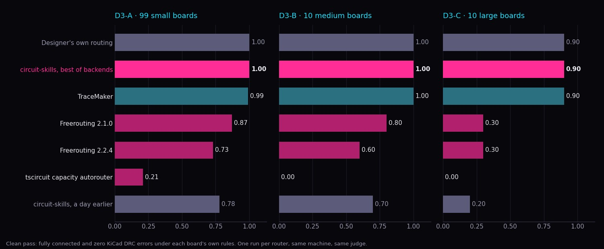
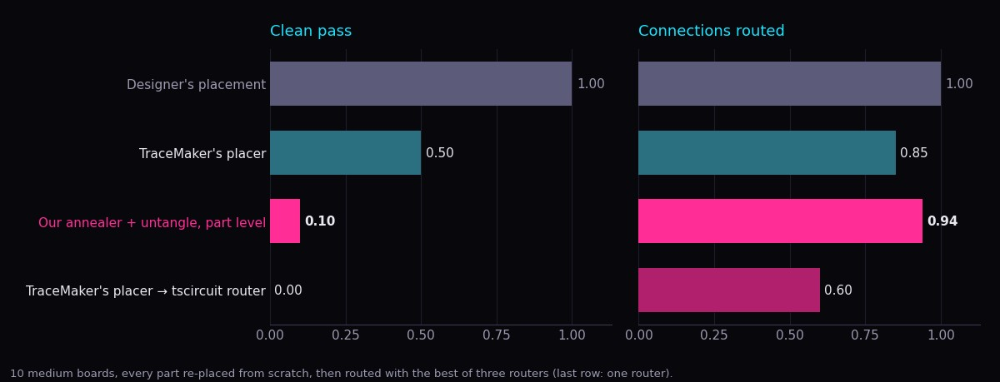

Yesterday we scored our routers on 119 real boards and called 78% on the small ones close to the state of the art. A newly published router does better than that, on our machine, with our judge. TraceMaker is a new open-source autorouter for KiCad, written in C++ with CUDA, built largely by coding agents. We ran it on the same boards.
- TraceMaker finished 99% of the small boards clean, 100% of the medium ones and 90% of the large ones. Ours finished 78%, 70% and 20%.
- We added it as a backend, along with an older Freerouting. Our best-of row is now 100%, 100% and 90%.
- Then we took the parts off the boards. With placement to do as well, its placer gets 50% of the medium boards clean and ours gets 10%. The designers' placements get 100%.

01 / The comparison
The benchmark is the one from yesterday's post: PCBWorld's D3 set of real open-source boards. Each board keeps its designer's placement and has its routing stripped. A result counts as a clean pass only if it comes back fully connected with zero error-level KiCad DRC violations under the board's own rules.
TraceMaker built from source in 22 seconds. Its CUDA build targets its author's two older Tesla cards; one CMake setting retargets it to an RTX 4070. The GPU only speeds up its cost fields: on the board we checked, GPU and CPU builds wrote byte-identical files. Every run below used its default 8-variant portfolio with a 60-second limit, and was scored by the same stock KiCad 9 DRC as our own backends.
| Split | TraceMaker | circuit-skills, a day earlier | Freerouting 2.2.4 |
|---|---|---|---|
| D3-A, 99 small | 0.99 | 0.78 | 0.75 |
| D3-B, 10 medium | 1.00 | 0.70 | 0.70 |
| D3-C, 10 large | 0.90 | 0.20 | 0.20 |
Board by board, it was clean on 32 boards where we were not. We were clean on one where it was not, a pogo-pin adapter where it reported three pins boxed in. It added zero DRC errors on all 119 boards, including the ones it did not finish. On small boards it was also faster: a median of 0.6 seconds against our 5.9. On boards both routed clean, its tracks were 5–7% shorter, with about twice the vias on the larger boards.
One caution about these numbers. PCBWorld's boards come from PCBench, which is the set TraceMaker was developed against, so some of them may be boards it was tuned on. Its own held-out figure, on 60 harder boards, is 73–78% clean.
02 / Why it wins
This benchmark hands every router a finished placement, so none of our placement work gets used. What is left is pure routing, and there we were only as good as the two routers we wrap. Both lose for plain reasons:
- Freerouting 2.2.4 stops early. It quits once a pass leaves the board unchanged. Every board we failed yesterday was 1 to 5 connections from done.
- The tscircuit router, through our bridge, doesn't route to KiCad's rules. It connects 98–100% of everything and leaves about ten clearance and width errors per small board. The most common is a track too close to a through-hole pad. Some of that may be our KiCad adapter and not the router; we have not separated the two.
- Freerouting sees a translation. The board is exported to Specctra format, routed, and imported back. Rules are lost on the way.
TraceMaker avoids all three. It reads the KiCad board and rules directly. It checks every segment against exact geometry before it commits it. And when a connection is blocked it rips up and renegotiates. On the medium board we looked at closely, all eight of its variants routed every connection in a single pass with no rip-ups at all. On this evidence the boards are within reach of a router that checks its own work, and ours were leaving them unfinished.
03 / How it was built
Nothing in TraceMaker is a new algorithm. Its repository is worth reading for how the work was set up:
- A score a machine can check, from the first day. 1,157 real boards, judged by KiCad's own DRC, with Freerouting's published per-board results as the bar. A regression tier runs before any routing change lands. An agent can improve against that overnight with nobody watching, and the repository has the overnight reports.
- Design before code. Fifteen design documents and a decision log of 52 entries. Every algorithm is a published one, cited where it is defined.
- Rules that make generated code safe to trust. No copper without the exact check. Every fast path has a slow reference path and a test that the two agree. Output is deterministic.
- It matches the judge. It has its own DRC, tested for parity with KiCad's, so what the router thinks is legal is what the judge thinks is legal.
It also changes how we read yesterday's result. We measured ourselves against Freerouting and called that close to the state of the art; on these boards, at least, there was more room above it than we assumed.
04 / So we plugged it in
Our harness, route_eval, runs every available router on a board, scores each result the same way and keeps the best. Adding a router is one branch. We added two: tracemaker, and freerouting:2.1.0, the older Freerouting release that keeps optimizing where 2.2.4 stops.
| Split | Best of all backends | TraceMaker | Freerouting 2.1.0 | Freerouting 2.2.4 | tscircuit |
|---|---|---|---|---|---|
| D3-A, 99 small | 1.00 | 0.99 | 0.87 | 0.73 | 0.21 |
| D3-B, 10 medium | 1.00 | 1.00 | 0.80 | 0.60 | 0.00 |
| D3-C, 10 large | 0.90 | 0.90 | 0.30 | 0.30 | 0.00 |
The tenth large board is the one its own designer left incomplete, so 0.90 is the ceiling there.
The routers are not redundant. On the small boards the kept candidate came from TraceMaker 63 times, Freerouting 2.1.0 19 times, Freerouting 2.2.4 13 times and the tscircuit router 4 times. The one board TraceMaker could not finish, another router did. Running several and keeping the best is still the right shape; it just needed a better router in it.
The cost is time. The full pass on a small board went from 7 seconds to 13, and on the large boards it now takes minutes, because every router that cannot finish runs out its clock.
05 / Take the parts off
All of that is routing on a placement a person made. The harder question is the one before it. We took the ten medium boards, stripped the routing, pulled every part that carries a net off its position, and asked a placer to put them back. Then we routed the result with three routers and kept the best.

- TraceMaker's placer: 5 of 10 clean. It is a separate program from the router and did not run in the routing benchmark above. On five boards its placement already had KiCad DRC errors before any routing, and on the two we opened, a pad sat off the board edge while the placer reported the result as legal.
- Ours: 1 of 10 clean. We ran our own placement heuristics, a simulated-annealing placer and a rotation pass, on single parts. Its placements let the routers connect more (94% of connections against 85%), but nine of ten failed DRC before routing. The adapter treats parts and the board as boxes and has no step that makes the result legal. It is also a harsh test: our heuristics are written to arrange a handful of subcircuit blocks in a code-defined design, not 20 loose parts.
- TraceMaker's placer with the tscircuit router: 0 of 10. We tried this pairing because it sounded plausible. It pairs the weaker half of each.
Ten boards is a small sample. The gap to the designers is not small: every one of their placements routes clean.
06 / What we were missing
- We don't own a legality model. We connect routers through adapters that lose rules, and find out from KiCad afterwards.
- Our benchmark is new and gates nothing. We run it by hand. TraceMaker's gated every change from its first commit.
- We optimise a proxy. Our placement score predicts whether a board will route weakly: it gets the ordering right 48–66% of the time. TraceMaker's loop optimises the real outcome.
- We have no legal placer for a bare KiCad board.
We are not going to write a router. TraceMaker is a better one than we would build, it is GPL-3.0, and it now runs inside our harness as a separate program. What we take from it is the method, pointed at the part nobody is good at yet: placement, and the loop between placement and routing. Half of TraceMaker's failed placements fail on a handful of boxed-in pins, the kind a small local move would free.
07 / A corpus with real rules
PCBench's boards are KiCad 5 files with no project file, so every one is judged against KiCad's default rules. For placement work we want current designs with their own rules, so we started a second corpus from GitHub. It has 235 boards from 170 repositories under open-hardware and permissive licences, each pinned to a commit, with its licence recorded. 178 are two-layer and 57 four-layer.
A board qualifies if it opens in KiCad 9, has a project file beside it, and its designer's routing leaves nothing open. Only 77 of the 235 have zero DRC errors as their designers shipped them, so those 77 are the set where a clean pass is a fair bar. The boards are published as punkfab/pcb-corpus: each one as its designer shipped it and as an unrouted copy, with its project rules, its source commit and its own licence file.
08 / Update: the tscircuit router, the placement score and the corpus
Three follow-ups from the same day.
The tscircuit router's errors are its own, and they can be repaired from outside. We checked its returned traces against the exact geometry we hand it, with KiCad out of the loop. On 40 small boards the two agree closely: 107 segments narrower than the minimum we set, and about 180 places where a trace overlaps or crowds another net. The narrow segments are all exactly 0.1 mm, whatever the board's rule. So we wrapped it instead of patching it. A new backend, srj-legal, lets it route, deletes every track KiCad's DRC objects to, and has TraceMaker re-route only those connections against the board's rules.
| Split | tscircuit alone | tscircuit + legal finish | TraceMaker alone |
|---|---|---|---|
| D3-A, 99 small | 0.21 | 0.98 | 0.99 |
| D3-B, 10 medium | 0.00 | 1.00 | 1.00 |
A median of 86% of its tracks and vias survive on the small boards and 61% on the medium ones. It matches TraceMaker alone on these splits; it does not beat it. The large split had not finished when this was written.
The placement score now has measured weights. We placed each of 64 corpus boards five ways (the designer's placement, two degraded copies of it, our placer and TraceMaker's), routed every one, and asked which measures rank the better-routing placement first. Peak congestion, the measure we leaned on, gets it right 79% of the time. Between two legal placements it is the weakest measure we have (64%), and ratsnest crossings per net is the strongest (90%). A combined score fitted on those outcomes gets 89% on boards held out of the fit, and is now what placement_score.py reports for comparing placements of one board.
The corpus is public and grouped. punkfab/pcb-corpus now describes every board (size, density, stackup, packages, rules, what is on it) and sorts the 235 into overlapping groups. Difficulty is measured: routed by TraceMaker with a 30-second budget, 48 boards come back clean, 101 are at least 98% connected but not clean, and 86 are left more open than that. Through-hole and single-sided boards are the easy end. Fine-pitch, four-layer and FPGA boards are the hard end.
09 / Caveats
- One run per router, on one machine. The benchmark's own paper keeps the best of five.
- TraceMaker is a new project, and this benchmark overlaps the set it was developed on.
- By its author's notes it stalls on large boards: 999 of 1,188 connections on one, barely improving with five times the budget.
- The placement comparison is ten boards, and our side of it is an adapter written today.
- Our harness scored TraceMaker's partial routes as failures until we caught it. Clean-pass rates were never affected, and the placement runs were redone.
Everything is in punkfab/circuit-skills: the new backends in route_eval, a runner that scores any external router beside a stored run, the unplaced-board harness, the corpus collector and every result. Thanks to TraceMaker's author for publishing something this easy to build and check. Have a board that needs placing or routing? Start a project →